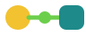
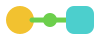

Das Auftreten von m-ko
Eine Marke für das, was ich tue: Menschen und KI so verbinden, dass beide besser arbeiten. Hier steht, wie m-ko aussieht und klingt.
Die Idee hinter dem Zeichen
Das Zeichen besteht aus drei Formen, und jede hat eine feste Bedeutung. Sie kehren auf der ganzen Seite wieder, auch in der Grafik im Kopfbereich.
Der Kreis: der Mensch
Warm, in der Farbe Sonne. Das Team, für das ich arbeite.
Das Quadrat: die KI
Klar und ruhig, in der Farbe Lagune. Ein Werkzeug mit festen Kanten, nichts Mysteriöses.
Die Linie: die Verbindung
Lime, mit einem Knoten in der Mitte. Das bin ich, der Connector, der beides zusammenbringt.
Logo
Das Logo gibt es mit Wortmarke und als Zeichen allein, jeweils für hellen und dunklen Grund. Die Wortmarke ist in der Schrift Bricolage Grotesque gesetzt und als Vektor ausgegeben, sie braucht also keine installierte Schrift.


Regeln
- Freiraum rundherum: mindestens die halbe Höhe des Kreises.
- Mindestgröße: Logo 100 Pixel breit, Zeichen allein 40 Pixel breit. Darunter nur das Favicon verwenden.
- Auf Tannengrün und anderen dunklen Flächen immer die helle Fassung, die Lagune wird dabei heller.
- Nicht verzerren, drehen, umfärben oder die Formen einzeln verwenden.


Farben
Die Farben kommen aus dem, wofür ich stehe: Wald und Garten als Grundton, dazu je eine Farbe für Mensch, KI und Verbindung. Die Kontraste sind nach WCAG berechnet. „AA“ heißt: Schrift in dieser Kombination ist gut lesbar.
- Tannengrün#12332E
Text, Wortmarke, dunkle Flächen
auf Papier: 12,5:1, AA - Papier#F3F6F4
Hintergrund der Seite
Tannengrün darauf: 12,5:1, AA - Papier tief#E4EBE6
Flächen, Karten, Abschnittswechsel
Tannengrün darauf: 11,3:1, AA - Sonne#F2C230
Der Mensch (Kreis), Kontaktfläche
Tannengrün darauf: 8,1:1, AA - Lagune#1F8A8A
Die KI (Quadrat) auf hellem Grund
Papier darauf: 3,8:1, nur große Schrift - Lagune hell#4CCFCD
Die KI (Quadrat) auf dunklem Grund
auf Tannengrün: 7,2:1, AA - Lime#6CCF4C
Die Verbindung, Aktion auf dunklem Grund
auf Tannengrün: 6,9:1, AA - Blatt#2F8F3F
Linien und Akzente auf hellem Grund
auf Papier: 3,8:1, nur große Schrift - Blatt tief#1F6B2E
Akzentschrift auf hellem Grund
auf Papier-tief: 5,4:1, AA - Moos#456560
Nebentext
auf Papier: 5,9:1, AA
Schrift
Zwei Schriften mit klarer Aufgabe. Beide liegen auf dem eigenen Server, es werden keine Daten an Dritte übertragen. Beide stehen unter der SIL Open Font License.
Bricolage Grotesque
Überschriften und Zahlen, Stärke 600 bis 700, enge Laufweite (-0,03 em), Zeilenabstand etwa 1,05.Atkinson Hyperlegible Next ist für den Fließtext da. Sie wurde für gute Lesbarkeit entworfen, auch bei schwachem Sehen. Zeilenabstand etwa 1,6, Zeilenlänge unter 70 Zeichen.
Fließtext, Beschriftungen, Schaltflächen.Stimme
m-ko klingt wie ein Mensch am Tisch, nicht wie ein Prospekt. Freundlich, ruhig, direkt, und mit einem Schuss Humor, wo er passt.
- So reden, wie man es am Tisch sagen würde. Du-Form, kurze Sätze, Verben statt Substantivketten.
- Erst der Mensch, dann die Technik. Was ändert sich im Alltag? Danach kommt, womit.
- Beispiele statt Fachwörter. Statt „Skills und Konnektoren“: ein Assistent, der aus euren Unterlagen antwortet.
- Nichts versprechen, was ich nicht halten kann. Keine Zahlen ohne Beleg. Beim Siegel Human-reviewed gelten außerdem die Regeln des Registers: nichts „sicher“ oder „zertifiziert“ nennen.
- Ruhig bleiben. Kein Marketinglärm, keine Ausrufezeichen, keine Superlative.
So nicht
„Ich berate ganzheitlich dort, wo IT, KI und Menschen aufeinandertreffen, und setze die Projekte auch selbst um.“
So schon
„Ich helfe kleinen und mittleren Unternehmen, KI so einzuführen, dass sie den Alltag leichter macht. Ich höre erst zu, baue dann die Lösung und bleibe dabei, bis dein Team sie gern nutzt.“